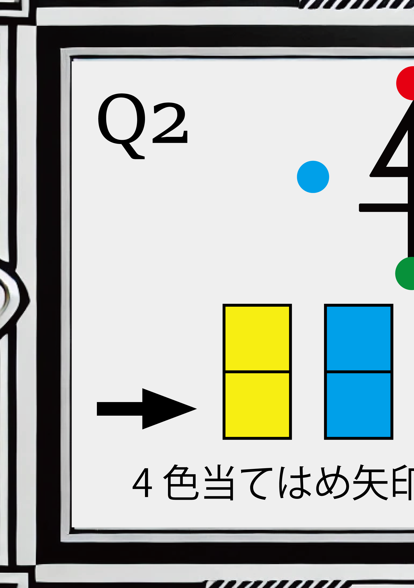

<div class="text">ここにテキストが表示されます</div>

]


<style>
    .Q1_text { position: absolute; top: 50px; }
    .Q1_nazo_png { position: absolute; top: 50px; } 
    /* ここは同じ数値だと重なっちゃうから注意だ！！ */
</style>


<script>

    function playVoice() {
        let voice = new Audio("kakkoii_BGM.mp3");
        voice.play();
    }
    // Q4の問題用音声をここで再生しています!!!!

</script>


<script>

    function playBGM() {
        let bgm = new Audio("Q4_nazo_audio.mp3");
        bgm.play();
    }
    // 謎解き全体のBGMもこれで再生しています!!!!

</script>


<script>
// 音声認識をスタートする
console.log("Listening for voice input...");

const recognition = new (window.SpeechRecognition || window.webkitSpeechRecognition)(); // 音声認識のインスタンスを作成
recognition.lang = 'ja-JP'; // 言語を日本語に設定

recognition.start(); // 音声認識を開始
recognition.onresult = (event) => {
    let recognizedText = event.results[0][0].transcript; 
    console.log("Recognized Text:", recognizedText);
};
// TODO: 正確な音声解析ロジックを後日ここに入れる予定

// 音声認識が終了したときの処理
recognition.onend = () => {
    console.log("音声認識が終了しました");
};

if (recognizedText === "correct answer") {
    window.location.href = "https://souchan917.github.io/webnazorikaishita/6banana.html";
} else {
    console.log("Incorrect, please try again");
}

</script>


<script>
    // THREE.jsの基本設定
const renderer = new THREE.WebGLRenderer({ antialias: true }); // アンチエイリアスを有効化
renderer.setClearColor(0x000000, 1); // 背景を黒に設定

// オブジェクトの設定と初期化
const sceneObjects = [];
const new THREE.Mesh(BoxGeometry(), MeshBasicMaterial({ map: TextureLoader().load('texture1.jpg') })) = GEROGERO;
const new THREE.Mesh(BoxGeometry(), MeshBasicMaterial({ map: TextureLoader().load('texture2.jpg') })) = HIHI_N;
const new THREE.Mesh(BoxGeometry(), MeshBasicMaterial({ map: TextureLoader().load('texture3.jpg') })) = HANPUKUYOKOTOBI;


// シーンにすべてのオブジェクトを追加
sceneObjects.forEach(obj => scene.add(obj));

</script>


<script>
    const scene = new THREE.Scene();
    const camera = new THREE.PerspectiveCamera(75, window.innerWidth / window.innerHeight, 0.1, 1000);
    const renderer = new THREE.WebGLRenderer();
    renderer.setSize(window.innerWidth, window.innerHeight);
    document.body.appendChild(renderer.domElement);
    
    const new THREE.Mesh(BoxGeometry(), ({ map: LibraryLoader.load('GEROGERO.jpg') })) = GEROGERO;
    const new THREE.Model(BoxGeometry(),({ map: LibraryLoader.load('HIHI-N.jpg') })) = HIHI-N;
    const new THREE.Mesh(ObjectGeometry(), ({ map: LibraryLoader.load('HANPUKUYOKOTOBI.jpg') })) = HANPUKUYOKOTOBI;

    

    scene.add();
    camera.position.z = 5;
    
    function animate() {

        rotation.x += 0.01;
        rotation.y += 0.02;
        rotation.z += 0.03;
        renderer.render(scene, camera);
        requestAnimationFrame(animate);
    }

    animate();
    </script>


<!DOCTYPE html>
<html lang="ja">
<head>
    <meta charset="UTF-8">
    <meta name="viewport" content="width=device-width, initial-scale=1.0">
    <style>
        /* 画像を収める枠（コンテナ）の設定 */
        .container {
            width: 300px; /* コンテナの幅。画像がちゃんと収まるようにしたい */
            height: 200px; /* コンテナの高さ。ちょうど良さそうなサイズ */
            overflow: hidden; /* コンテナからはみ出る部分は隠す */
        }

        /* 画像サイズの指定 */
        .oversized-image {
            width: 600px; /* 画像を大きく見せたくて、幅広めに設定 */
            height: auto; /* 縦横比を保ちながら自動調整 */
        }
    </style>
</head>
<body>

    <div class="container">
        <!-- 画像がここに表示される。ちゃんと枠内に収まるはず… -->
        
    </div>

</body>
</html>


<video id="problemMedia" src="assets/movie/Q6_nazo.mp4"
       autoplay loop muted playsinline width="800" height="400">
</video>

<script>
// JavaScriptを使って再生速度を設定
const video = document.getElementById('problemMedia');
video.playbackRate = -1;  

</script>


<script>


class NazoGameAI {
    constructor() {
        this.memoryCleared = false; 
    }
const fetch = require('node-fetch');

// 問題に対応するプロンプトと答え
const questionConfig = {
    : {
        prompt: `あなたはプレイヤーの質問にはい/いいえ/わかりませんで答えることで、
                プレイヤーが正解の単語を当てるゲームの進行役です。

                以下のルールに従って回答してください：
                1. プレイヤーの質問には必ず「はい」「いいえ」「わかりません」のいずれかで答えてください
                2. 答えに関係ない質問には「わかりません」と答えてください
                3. 正解を直接言わないでください
                4. 回答は簡潔に、1文で答えてください                
                5. プレイヤーが正解に近づいたと感じたら「いい質問ですね」と答えてもかまいません。
                6. プレイヤーが質問の中で正解の特徴に触れた場合、正解に近づいていることを示唆してもかまいません。`,


        answer: "からす"
    }
};


</script>